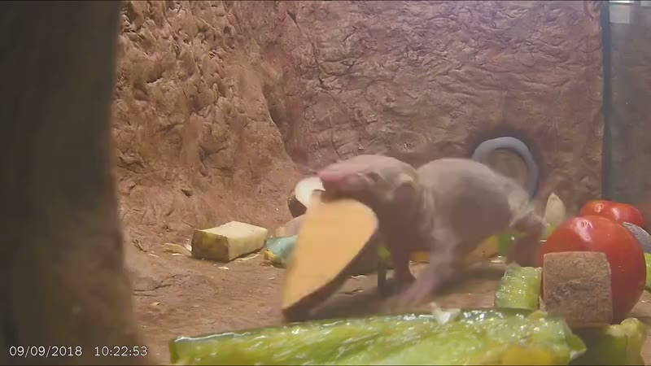
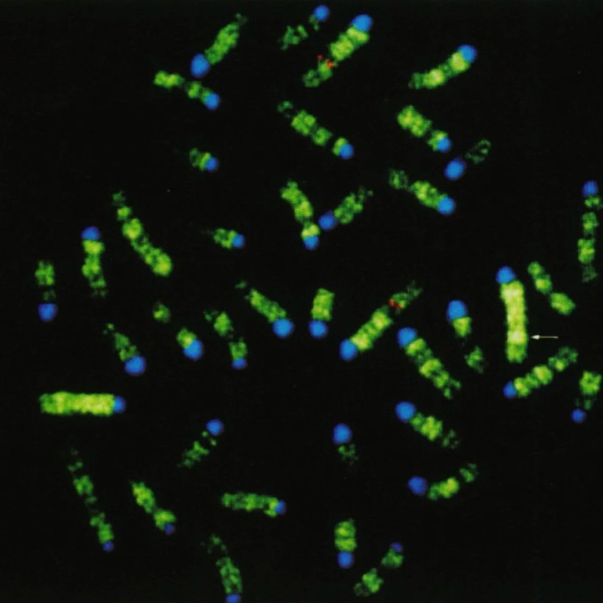
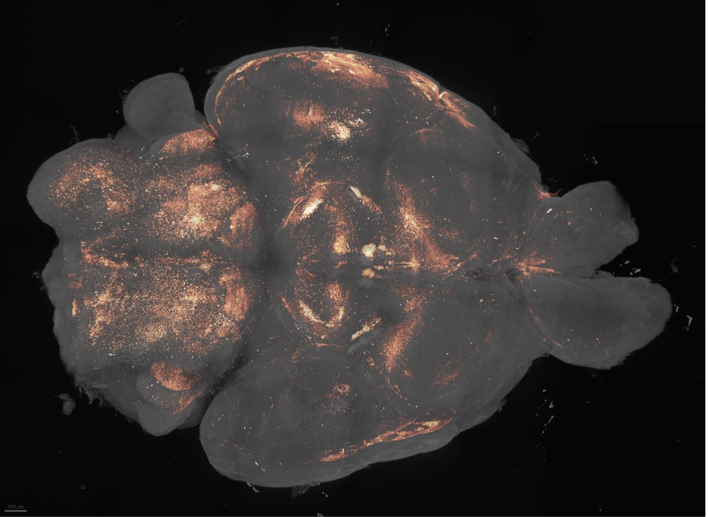
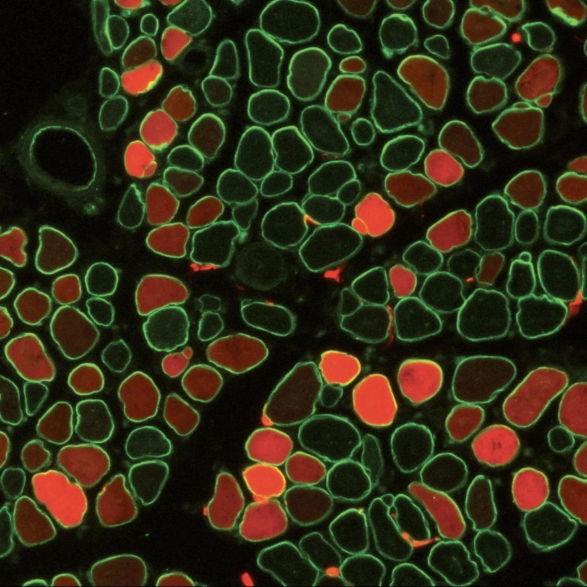

Age is the major risk factor for chronic disease. By studying mammalian aging itself—across tissues and species—we hope to identify new interventions for human aging-associated disease.

Throughout evolution viruses have injected their code into mammalian genomes—so much so that ~40-50% of all mammalian genomes are remnants from viral-like code. What does it do? What effect do they have on host-cell physiology, ageing, disease? Using new sequencing-technologies, genome perturbation assays, and animal-models our group is systematically probing their function.

The brain coordinates all physiology. In aging these neural coordination hubs atrophy in surprising ways. We are finding out how these decaying circuits affect our physiology and new methods of targeting these brain regions to reverse aspects of aging.

In the last decade science has developed an unprecedented ability to manipulate the genome in ever more precise ways. In parallel, newly evolved delivery vectors can bring these potent genome editors to specific cell-types and tissue. As we uncover fundamental biology, we will devise new therapeutic interventions to treat human disease.